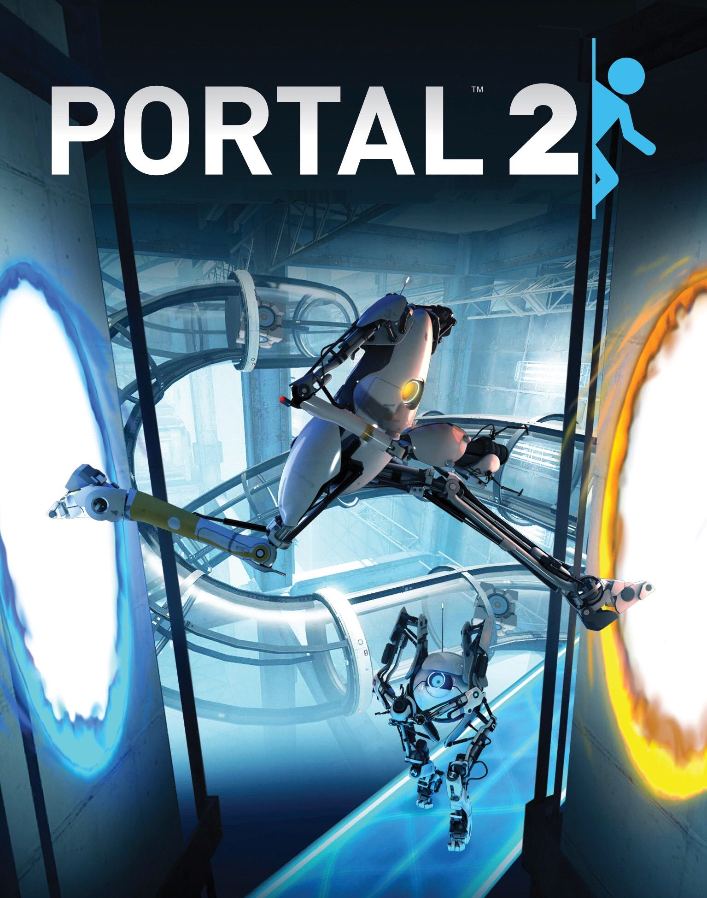

Top games of all time
-
Half-Life 2: 2004
Released in 2004 to follow up on the smash-success of its predecessor, Half-Life 2 puts players back into the mind of Gordon Freeman. You're joined by Alyx Vance as you fight your way through the campaign to the people helping the Combine, in order to free the human race.The game’s reception has remained positive, too: it won 39 Game of the Year awards, along with awards for dozens for components like voice acting and sound effects, and even has several nods in 2008 from Guinness World Records. Between its Metascore of 96 and User Score of 9.2, Half-Life 2 claims the top spot with a combined 9.4.
-
Portal 2 (2011)
Sure, the cake might be a lie, but Portal 2 taking the second spot on our list definitely isn’t. This 2011 sequel follows the original’s puzzle-platformer gameplay, and adds new elements, including tractor beams, light bridges, and lasers. Guiding voice and classic video game antagonist Glados returns, and she’s pissed that you killed her in the prequel.
-
Baldur’s Gate 2: Shadows Of Amn (2000)

BioWare makes the list once again with this RPG sequel, and for good reason – not only is Baldur’s Gate 2 great, but it’s jam-packed with 200 to 300 hours of content. In 2000, that was unheard of, but between the main story and side quests, you more than get your money’s worth. Critics lauded the game at the time with words like “captivating,” “polished,” and “exemplary.”
-
League of Legends

League of Legends was the number 4 PC game in June 2022, based on the number of monthly active users or players. League of Legends is a Battle Arena game developed by Riot Games that can be played on Windows, and Mac. In June 2022 League of Legends was ranked 1 on popular streaming platform Twitch based on 119 million hours watched. The game was published by Riot Games on 27-12-2009
-
Counter-Strike: Global Offensive

Counter-Strike: Global Offensive was the number 5 PC game in June 2022, based on the number of monthly active users or players. Counter-Strike: Global Offensive is a Shooter game developed by Valve that can be played on Mac, Linux, Xbox 360, Windows, and PlayStation 3. In June 2022 Counter-Strike: Global Offensive was ranked 4 on popular streaming platform Twitch based on 56 million hours watched. The game was published by Valve on 21-12-2012
Categories
Action games
Adventure games
Strategy games
Puzzle games
Sports games